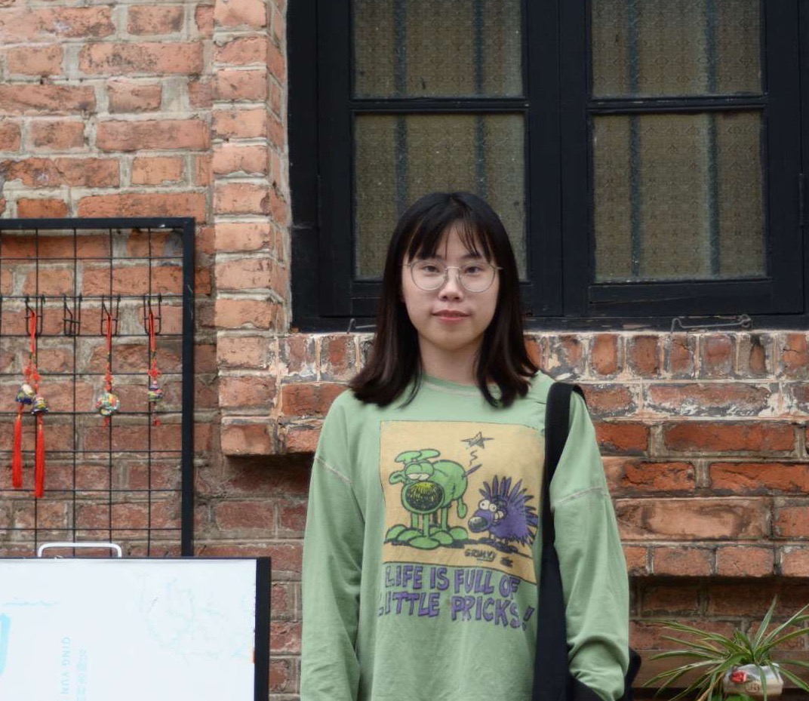

Carnegie Mellon University
Language Technologies Institute
I am a CS Ph.D. student at Carnegie Mellon University starting 2025 Fall, advised by Prof. Chenyan Xiong. Prior to this, I earned both my master's and bachelor's degrees from Sun Yat-sen University, where I was advised by IEEE Fellow Prof. Liang Lin and Prof. Wushao Wen. I have also had the pleasure of collaborating with Prof. Alan Yuille and Jieneng Chen at CCVL, as well as Prof. Pan Zhou and Shanghua Gao at Sea AI Lab. I also had a great experience contributing to OneFlow. My research interests include:
Undergrad & Master's Students: I'm always excited to work with motivated students. If you're interested in exploring a research collaboration or want to chat about potential projects, feel free to email me and we can set up a time to talk!
Fellow Researchers: I love exchanging ideas and finding unexpected connections across research areas. Whether you're working on something related or just want to brainstorm, don't hesitate to reach out — I'm always happy to chat over a virtual coffee ☕
Invited Journal Reviewer: IEEE TKDE, IEEE TMM, IEEE TPAMI
Invited Conference Reviewer: ICLR, ICML, NeurIPS, CVPR, ICCV, ACL, EMNLP, WWW, ECCV, AAAI